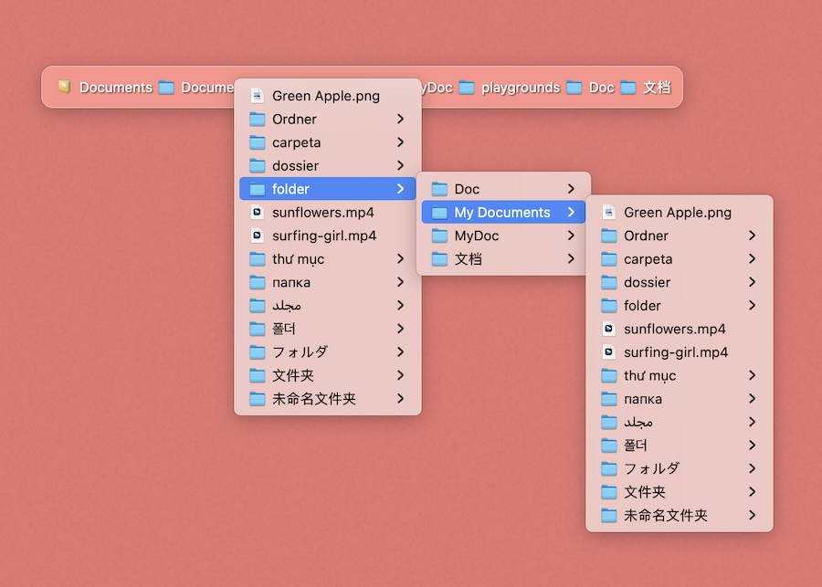
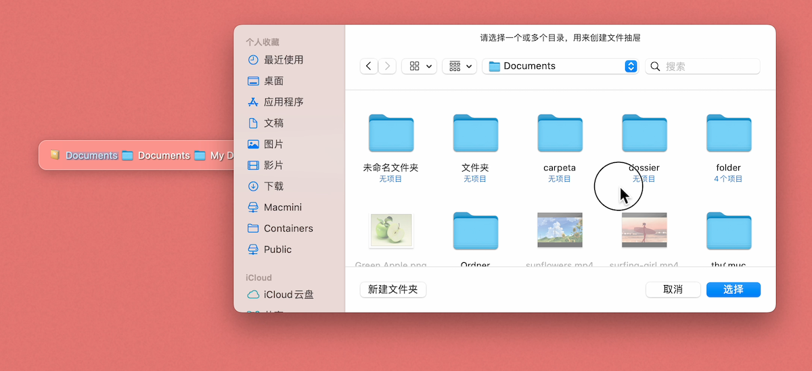
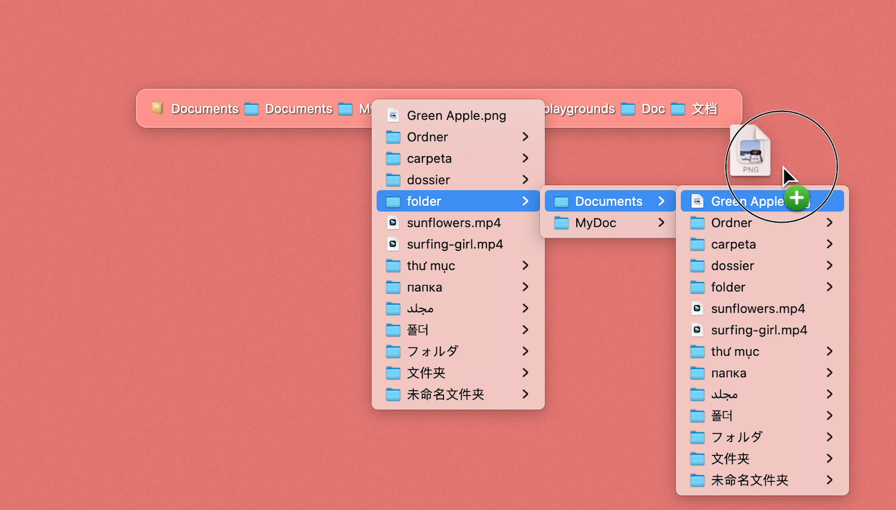
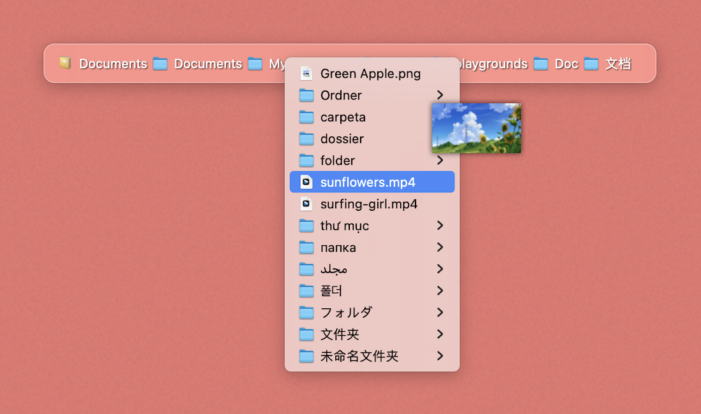
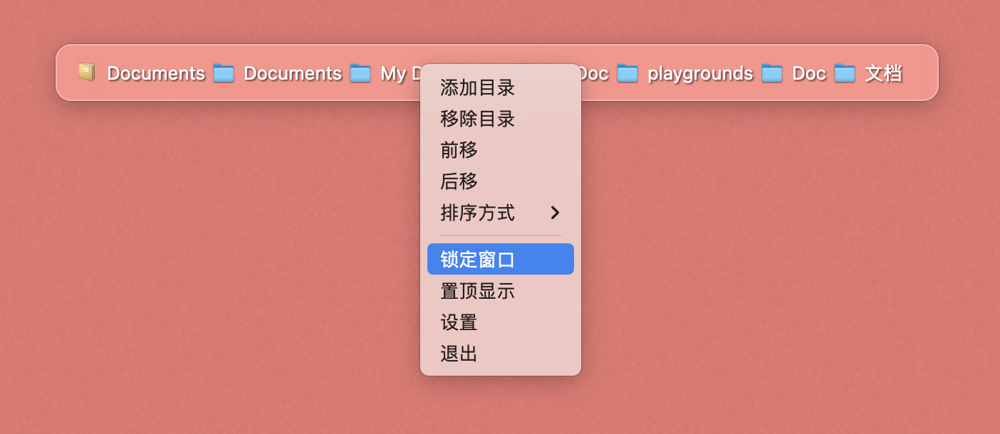
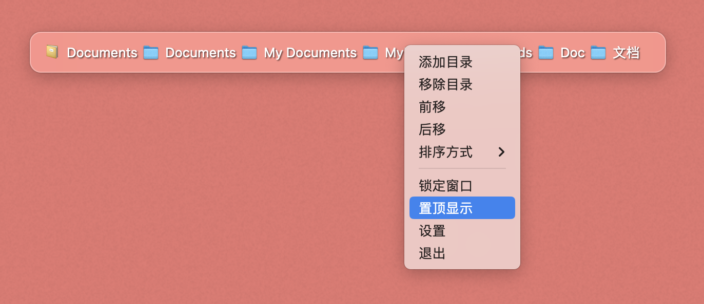
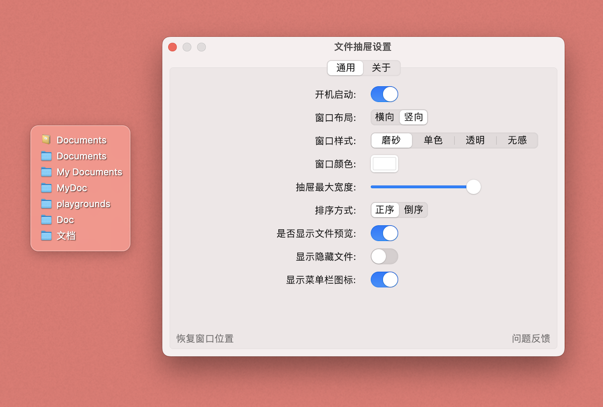

文件抽屉

功能介绍
把文件放到菜单里，让你快速找到它
你可以添加多个抽屉（目录），甚至是一次性添加多个目录都可以
打开抽屉，你可以看到这个目录下的所有文件，你可以点击打开，或拖拽它到需要的地方
你可以设置文件的排序方式（排列顺序），以便菜单的显示更符合你的需要

鼠标划过时显示文件预，方便你确认就是这个文件
前移或后移某个抽屉，你可以决定它们的重要性

你可以锁定窗口，这样鼠标就不能拖动它了
置顶显示，可以让窗口一直显示在最前面，而不会其它窗口遮住
根据你的喜欢，可以设置抽屉窗口是横向显示或者竖向显示
四种显示样式，可以让它更加个性
如果某个目录的名字很长，你可以设置抽屉的最大宽度
更多好用的想法，欢迎评论和提意见